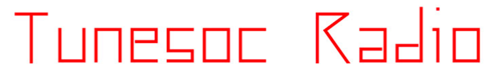

Doing the re-branding for Tunesoc gave me an opportunity to play with some fun ideas and visuals. The brief
for this outlined utilising childlike design infused with a techno style typeface while staying true to the
heart of what the brand does; which is playing music by up and coming artists. To achieve this, I combined a
visual of a record and a play on words; the Tunesoc logo is a Tune sock! This was actually an idea coined by
one of the DJ’s and we really wanted to incorporate this into the final design to keep the meaning of the
design close to home for the client. The colour scheme was to be simple and bold, what is more simple and
bold than the classic white, black, and red? And thus, the shiny new Tunesoc branding was born!